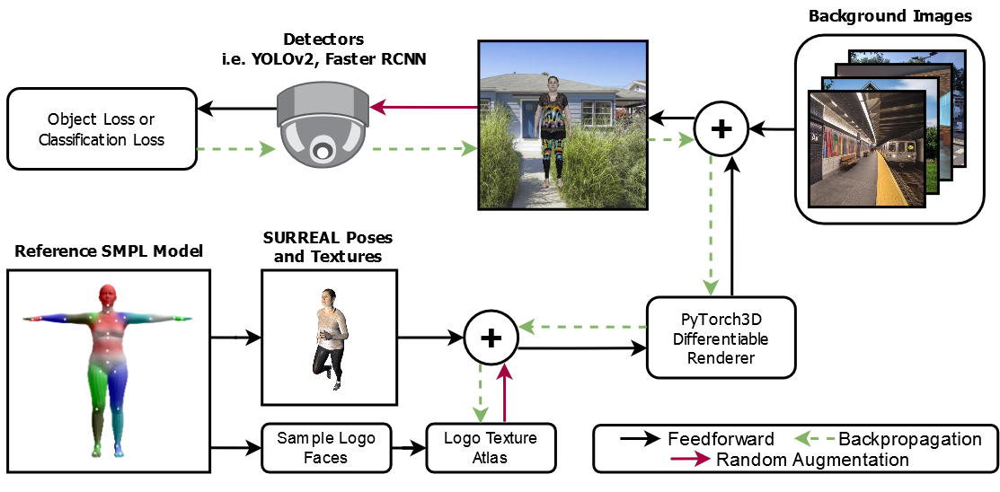
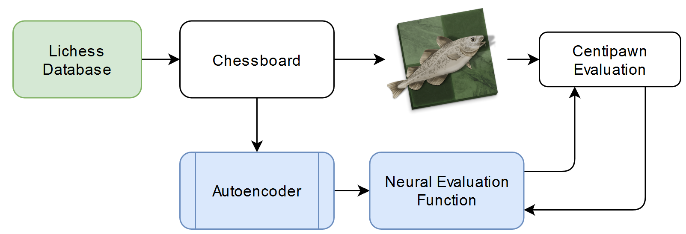
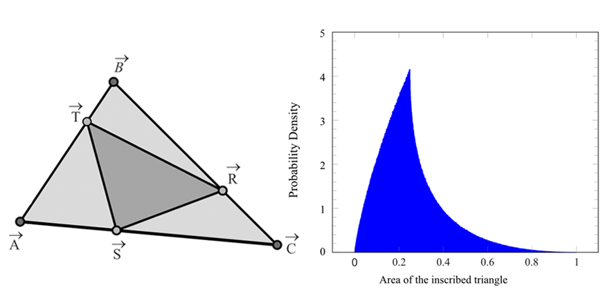

|
I am a first year Computer Science PhD student at Brown University, where I am advised by Professor Daniel Ritchie. My work is now supported by the NSF Graduate Research Fellowship Program. I received my BS in computer science from The University of Texas at Austin in 2021, where I did research with Professor Chandrajit Bajaj. My research interests lie at the intersection of machine learning, computer graphics, and 3D computer vision. In my free time I enjoy creating 3D renderings of abstract scenes and physical simulations. |
|
|
|
I am interested in the applications of machine learning methods for representing, synthesizing, and manipulating 3D objects and scenes. |
|  |
Arman Maesumi*, Mingkang Zhu*, Yi Wang, Tianlong Chen, Zhangyang Wang, Chandrajit Bajaj
3D human meshes are cloaked from object detectors via adversarial texture maps, which are trained using differentiable rendering. |
|  |
Arman Maesumi arXiv, 2020 preprint / code A neural network is trained to evaluate chess positions, and is used to play the game without intense look ahead algorithms. |
|  |
Arman Maesumi The College Mathematics Journal, 50:5, 364-371, 2019 journal / pdf The probability density function and moments (OEIS A279055) of the area of stochastically generated inscribed geometry are derived. Preliminary findings were presented at TUMC 2017. |
|
In my free time, I enjoy creating 3D renderings and physical simulations using various software. More can be found here. The programs and tools that I use include: Blender, Cinema 4D, RealFlow, Vray, Octane, Arnold, Krakatoa, and more. |

|
Realtime Fractal Explorer (2D and 3D) (OpenGL/WebGL, JavaScript), 2021
|
| |